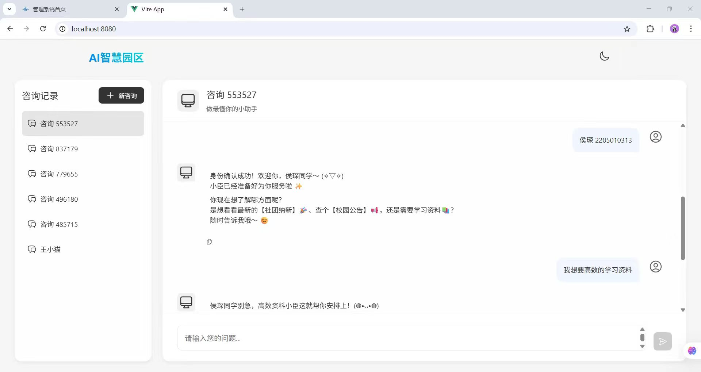

← 返回项目
AI Assistant
智慧校园 AI 助手
基于 RAG（检索增强生成）架构的校园 AI 问答系统。实现对课程信息、校园公告、办事流程等多源数据的语义检索与智能应答。我在实习期间作为后端核心开发者参与构建，负责数据服务模块开发、知识检索链路构建与系统优化。

// RAG 检索流程
用户请求 → 意图解析
→ 向量检索(Milvus)
→ 上下文拼接
→ LLM 生成 → 应答
项目概述
本项目是一个面向【校园师生】的【AI 智能问答系统】，主要解决【校园信息分散、师生查找效率低的问题】。系统支持【语义检索与智能问答】、【多源知识库管理】、【多轮对话交互】等功能。
我在项目中主要负责【后端核心开发、知识检索链路构建、系统性能优化】等工作，重点完成了【数据服务模块开发】和【检索链路与 Prompt 优化】。
源码地址：https://github.com/houdianchen8-tech
在线演示：请联系获取演示账号
项目背景
在校园场景中，课程信息分散在各院系网站，校园公告散落在不同渠道，办事流程需要师生自行查阅文件——信息获取效率极低。
- 课程信息发布不集中，学生需逐个平台查找
- 校园公告更新快，关键信息容易被淹没
- 办事流程不统一，师生需多次咨询相关部门
因此设计并实现了智慧校园 AI 助手，用于提升校园信息获取效率和师生服务体验。
我的职责
本人在项目中承担后端核心开发者角色，主要负责以下工作：
- 负责数据服务模块开发，完成多源校园数据的接入、清洗与结构化处理
- 基于 Milvus 向量数据库构建知识检索链路，实现文档向量化存储与语义检索
- 设计并实现请求解析、上下文拼接、大模型调用封装等核心接口
- 针对接口响应慢的问题，引入缓存策略与异步请求机制降低延迟
- 优化 Prompt 模板与多轮对话控制策略，提升模型回答稳定性与用户体验
技术栈
AI · 后端 · 数据库 · 工具
AI / 算法
RAG 架构 / LLM / Prompt Engineering / Embedding
后端
Java / Spring Boot
数据库
MySQL / Milvus / FAISS 向量数据库
工具
Git / Maven / Postman / IDEA / Cursor
系统架构
系统采用 RAG（检索增强生成）架构设计。核心流程：
用户输入问题 → 系统对问题进行预处理和意图识别 → 从 Milvus 向量库中检索相关文档片段 → 将检索结果与用户问题拼接为 Prompt → 调用大模型生成回答 → 返回结果并记录对话上下文
用户问题
意图解析
向量检索
(Milvus) 上下文拼接 LLM 生成 应答
(Milvus) 上下文拼接 LLM 生成 应答
核心功能模块
以 RAG 架构驱动的智能问答
语义检索
基于 Milvus / FAISS 向量数据库构建知识检索链路，支持多源校园数据的语义级检索。
上下文工程
完成用户请求解析、上下文拼接、模型调用封装，通过 Prompt 设计优化输出质量。
多轮对话
设计多轮对话控制策略，维护对话历史与状态管理，提升交互连贯性。
监控与兜底
建立日志监控与异常处理机制，确保多用户并发场景下的系统稳定运行。
技术难点与解决方案
难点一：AI 回答不稳定，输出质量波动大
问题描述：同样的提问在不同轮次得到的回答质量不一致，有时会遗漏关键信息。
解决方案：
- 优化 Prompt 模板结构，明确角色设定、输出格式和约束条件
- 改进上下文拼接策略，优先召回相关性最高的前 K 条文档片段
- 对检索结果做去重与排序，减少噪声信息干扰
最终效果：回答质量稳定性明显提升，关键信息覆盖率提高。
优化效果 / 项目成果
项目最终实现了基于 RAG 架构的校园 AI 问答系统。
量化成果：
- 完成数据服务、检索链路、模型调用、对话管理 4 大核心模块
- 接入多源校园数据（课程、公告、办事流程）
- 开发 15+ 个后端接口
- 接口响应延迟降低约 35%（缓存 + 异步优化）
- 模块开发周期缩短约 40%（借助 Cursor 辅助编码）
项目总结
通过该项目，我深入实践了 RAG 架构的完整实现流程，从数据向量化、检索策略设计到 Prompt 工程与模型调用，积累了 AI 应用落地的工程经验。
后续优化方向：增加 Redis 缓存高频查询、引入回答质量评估机制、补充单元测试。